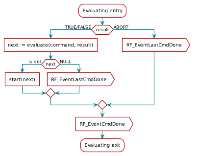

Radio operation commands¶
Radio operation commands are more complex than direct and immediate commands and their execution can take much longer time. In order to understand the whole process, it may help to think of the RF core as a washing machine and the radio operation commands as washing programs. The command parameters represent all the knobs and buttons that modify the chosen program.
Execution States and Status Codes¶
After delivering to the RF core, a radio operation passes several states. They are illustrated as a UML state chart in Figure 37. and explained in Table 1. Each state performs several activities which are explained during the next sections.
![@startuml
scale 0.8
state PENDING {
state Parsing
state WaitingForStartTrigger
[*] -> Parsing
Parsing --> WaitingForStartTrigger : ok
Parsing --> [*] : failed
Parsing --> [*] : skipped
WaitingForStartTrigger -> [*] : triggered
}
state ACTIVE {
state Executing
note right
command-specific
end note
state Evaluating : evaluate(result);
note left
might set skipping = true
for chained commands
end note
[*] -> Executing
Executing --> Evaluating : finished / result
Evaluating -> [*]
}
state DONE as "DONE*"
state ERROR as "ERROR*"
[*] -> IDLE
IDLE -> PENDING : posted
PENDING --> ACTIVE : triggered
PENDING -> SKIPPED : skipped
PENDING --> ERROR : parsing failed
ACTIVE --> DONE : done [success]
ACTIVE --> PENDING : done\n [skipping == true,\ncmd.condition.nSkip == 0]
ACTIVE -> ERROR : done [fail]
DONE -[hidden]-> ERROR
DONE --> [*]
SKIPPED --> [*]
ERROR -> [*]
@enduml](../_images/plantuml-2458542d91c34566c4c58c22a6b7f7dfd828c346.png)
Figure 37. The life-cycle of a radio operation. The state is equivalent to the status code despite of states marked with a * .¶
Command Execution States¶
| Status | Description |
|---|---|
| IDLE | The command has not been posted to the RF core, yet. This is the default status. |
| PENDING | The command is being parsed and the RF core waits for the start trigger to fire. |
| ACTIVE | This state is very command-specific. The command executes until it terminates.
Some commands provide also end triggers for alternative termination.
Command execution produces a result, either of TRUE, FALSE or ABORT.
After the execution phase, both, the result value and the command condition
rule get evaluated.
Several command-specific callback events may be generated during the ACTIVE state. |
| DONE* | A command-specific status code is written to status and a callback event is generated
for single commands or for the last command in a chain. |
| ERROR* | Either parsing failed or command execution ended with an error. A command-specific error code is
written to status and a callback event is generated. |
| SKIPPED | The command was skipped due to a skipping rule in a previous command.
command.status is set to SKIPPED. This applies only to commands in chains.
A callback is not performed. |
States marked with (*) do not exist as one explicit status code, but as
various command-specific variants. The code PROP_DONE_OK, for instance, is
specific to proprietary commands.
Status codes are defined in
<ti/devices/${DEVICE_FAMILY}/driverlib/rf_mailbox.h> for common radio
operations. Additional codes for proprietary commands are are defined in
<ti/devices/${DEVICE_FAMILY}/driverlib/rf_prop_mailbox.h>.
The status is queried via the command’s status field that is available for every radio operation:
struct RF_Op {
// ...
uint16_t status; // An integer telling the status of the command. This value is
// updated by the RF core during operation and may be read by the
// system CPU at any time.
// ...
};
It is recommended to read the status only after command completion:
// Assuming that 'command' points to a valid radio operation and
// execution has completed. Volatile is needed because 'status'
// is written on another processor.
volatile RF_Op* command;
if (((volatile RF_Op*)command)->status == PROP_DONE_RXTIMEOUT) {
// ...
}
It is tempting to use the status member to synchronize to command execution, for instance, to wait until the command has actually started:
// Dangerous, don't do this!
while (((volatile RF_Op*)command)->status != ACTIVE) {}
However, this is strongly discouraged because the calling thread might get
interrupted while the command has already finished in the meantime. Hence, the
ACTIVE state is never seen and the while loop runs forever. Instead,
use RF driver events to synchronize to command execution, either via callbacks
or RF_pendCmd.
Error Cases¶
Whenever executing an RF operation, it is good practice to check the status code and test for possible error cases. Depending on whether it is a proprietary or a PHY-independent command, several various status codes apply. It is up to the application to take appropriate measures.
The following code snippet is an example of how to execute a TX operation and how to check the status:
#include <ti/devices/${DEVICE_FAMILY}/driverlib/rf_prop_mailbox.h>
// Execute the command
RF_EventMask terminationReason = RF_runCmd(rfHandle, (RF_Op*)&RF_cmdPropTx,
RF_PriorityNormal, NULL, 0);
if ( terminationReason & RF_EventCmdDone )
{
// A radio operation command in a chain finished
}
else if ( terminationReason & RF_EventLastCmdDone )
{
// A stand-alone radio operation command or the last radio
// operation command in a chain finished.
}
else if (terminationReason & RF_EventCmdCancelled )
{
// Command canceled before it was started; it can be caused
// by RF_cancelCmd() or RF_flushCmd().
}
else if ( terminationReason & RF_EventCmdAborted )
{
// Abrupt command termination caused by RF_cancelCmd() or
// RF_flushCmd().
}
else if ( terminationReason & RF_EventCmdStopped)
{
// Graceful command termination caused by RF_cancelCmd() or
// RF_flushCmd().
}
else
{
// Uncaught error event
}
uint32_t cmdStatus = ((volatile RF_Op*)&RF_cmdPropTx)->status;
switch(cmdStatus)
{
case PROP_DONE_OK:
// Packet transmitted successfully
break;
case PROP_DONE_STOPPED:
// Received CMD_STOP while transmitting packet and finished
// transmitting packet
break;
case PROP_DONE_ABORT:
// Received CMD_ABORT while transmitting packet
break;
case PROP_ERROR_PAR:
// Observed illegal parameter in the posted RF command
break;
case PROP_ERROR_NO_SETUP:
// Command sent without setting up the radio in a supported
// mode using CMD_PROP_RADIO_SETUP or CMD_RADIO_SETUP
break;
case PROP_ERROR_NO_FS:
// Error case. Due to CMD_FS failing during power-up, CMD_PROP_TX
// could not succeed. The RF core is powered up and the synth is not running.
// One possible work-around is: Ignore it and power the RF core down
// manually. CMD_FS will be re-executed on the next RF core power-up.
RF_yield(rfHandle);
break;
case PROP_ERROR_TXUNF:
// TX underflow observed during operation
break;
default:
// Uncaught error event - these could come from the
// pool of states defined in rf_mailbox.h
while(1);
}
Error Callback¶
With the RF_Params struct, you can add an error callback:
void rfErrCb(RF_Handle rfHandle, RF_CmdHandle rfCommandHandle, RF_EventMask rfEventMask);
void *mainThread(void *arg0)
{
RF_Params rfParams;
RF_Params_init(&rfParams);
rfParams.pErrCb = rfErrCb;
In the following example, a RF_ERROR_CMDFS_SYNTH_PROG (synth
error) will be handled by posting a new CMD_FS. When you do
RF_postCmd in the error callback, the command will be appended
to the RF driver’s command queue. There is no possibility to inject another
CMD_FS before any command pending in the queue. When the error callback is
executed, the RF core just came from power-down and there is (usually) an RX or
TX command waiting in the RF driver queue. Thus, if we want the CMD_FS to be
the next command executed, we should cancel any RF command in the queue.
void rfErrCb(RF_Handle rfHandle, RF_CmdHandle rfCommandHandle, RF_EventMask rfEventMask)
{
switch (rfCommandHandle)
{
case RF_ERROR_INVALID_RFMODE:
// Invalid RF_Mode.
break;
case RF_ERROR_CMDFS_SYNTH_PROG:
{
// Synthesizer error with CMD_FS.
// Cancel any RF commands in the queue
uint8_t stopMode = 1; //1: Stop gracefully, 0: abort abruptly
RF_cancelCmd(rfHandle, RF_CMDHANDLE_FLUSH_ALL, stopMode);
// Post a new CMD_FS
RF_postCmd(rfHandle, (RF_Op*)&RF_cmdFs, RF_PriorityNormal, NULL, 0);
break;
}
default:
// Uncaught error handle
break;
}
}
Attention
You must not use any blocking RF driver calls (such as RF_runCmd and RF_pendCmd) in the error callback! Instead, use non-blocking RF driver calls such as RF_postCmd.
Start and end triggers¶
All radio operations provide a start trigger. It brings the command from PENDING state into ACTIVE state and starts the actual command execution.
| Number | Identifier | Trigger fires |
|---|---|---|
| 0 | TRIG_NOW | Immediately. Available for start triggers only. This is the default value. |
| 1 | TRIG_NEVER | Never, except possibly by CMD_TRIGGER if bEnaCmd == 1. Default value for end triggers. |
| 2 | TRIG_ABSTIME | At an absolute time, specified by startTime. |
| 3 | TRIG_REL_SUBMIT | At a time relative to the command submission time. |
| 4 | TRIG_REL_START | At a time relative to the start of the command (when the start trigger fires). Available for end triggers only. |
| 5 | TRIG_REL_PREVSTART* | At a time relative to the start of the previous command. Applies only to chained commands. |
| 6 | TRIG_REL_FIRSTSTART* | At a time relative to the start of the first command in a chain. |
| 7 | TRIG_REL_PREVEND* | At a time relative to the end of the previous command in a chain. |
| 8 | TRIG_REL_EVT1* | At a time relative to event 1 of the previous command in a chain. |
| 9 | TRIG_REL_EVT2* | At a time relative to event 2 of the previous command in a chain. |
| 10 | TRIG_EXTERNAL | On an external trigger input. |
The start trigger configuration is defined by the following command members:
struct RF_Op {
// ...
ratmr_t startTime; // Absolute or relative start time (depending on triggerType)
struct {
uint8_t triggerType:4; // The type of trigger
uint8_t bEnaCmd:1; // 1: CMD_TRIGGER can be used as an alternative trigger
// 0: No alternative trigger command
uint8_t triggerNo:2; // Specifies the trigger number when using CMD_TRIGGER (bEnaCmd is 1)
// Valid values are 0..3.
uint8_t pastTrig:1; // 1: A trigger event in the past is interpreted as "fire now"
// 0: A trigger event in the past results in an error
} startTrigger; // Trigger that starts the radio operation command
// ...
};
End triggers are only available for operations that run for a longer time and wait for something to happen. CMD_PROP_RX is such a command. The configuration of end triggers is very similar to start triggers:
struct RF_Op {
// ...
ratmr_t endTime; // Absolute or relative end time (depending on triggerType)
struct {
uint8_t triggerType:4; // The type of trigger
uint8_t bEnaCmd:1; // 1: CMD_TRIGGER can be used as an alternative trigger
// 0: No alternative trigger command
uint8_t triggerNo:2; // Specifies the trigger number when using CMD_TRIGGER (bEnaCmd is 1)
// Valid values are 0..3.
uint8_t pastTrig:1; // 1: A trigger event in the past is interpreted as "fire now"
// 0: A trigger event in the past results in an error
} endTrigger; // Trigger that ends the radio operation command
// ...
};
Absolute triggers TRIG_ABSTIME¶
TRIG_ABSTIME fires at an absolute time stamp specified by the
startTime parameter. Absolute triggers are needed, for instance, when
implementing synchronous protocols where multiple commands must execute
relative to one common time base. This avoids glitches that one would observe
when using TRIG_NOW and timers on the main CPU.
Usually, RF_getCurrentTime is used to get the initial time and all other times are set relative to that one. In the following code snippet, a radio operation executes exactly every second:
#define RF_convertMsToRatTicks(milliseconds) \
((uint32_t)(milliseconds) * 4 * 1000)
command.startTrigger.triggerType = TRIG_ABSTIME;
command.startTime = RF_getCurrentTime();
for (;;) {
command.startTime += RF_convertMsToRatTicks(1000);
RF_runCmd(rfHandle, (RF_Op*)&command, RF_PriorityNormal, NULL, 0);
}
If startTime is not a future time stamp, then the trigger will never fire.
In such cases, command.startTrigger.pastTrig must be set to 1.
Please note, that the RF driver powers the RF core down while waiting for an absolute start trigger. This trick is described in the RF driver API documentation.
Relative triggers TRIG_REL_*¶
Relative triggers specify a time duration with respect to another event, for instance relative to the start of a radio operation. Table 2. lists all available trigger types.
The duration is always specified in RAT ticks. The following code snippet sets a relative end trigger for CMD_PROP_CS. A helper macro simplifies conversion.:
// Convert microseconds into RAT ticks.
#define RF_convertUsToRatTicks(microseconds) \
((uint32_t)(microseconds) * 4)
// Convert milliseconds into RAT ticks.
#define RF_convertMsToRatTicks(milliseconds) \
RF_convertUsToRatTicks((milliseconds) * 1000)
// Set a relative end trigger 4ms after execution start.
RF_cmdPropCs.csEndTrigger.triggerType = TRIG_REL_START;
RF_cmdPropCs.csEndTime = RF_converMsToRatTicks(4);
External triggers TRIG_EXTERNAL¶
TRIG_EXTERNAL is used to start and stop a radio operation by an external
hardware event. The event source is one of the internal RF core signals
RFC_GPI0 or RFC_GPI1. These signals can be routed to a physical pin
using the IO controller. Possible event types are either a rising edge, a
falling edge or both. Both, event source and type are encoded in the
startTime parameter of the radio operation.
The following code snippet shows how to start a command by a falling edge on
the GPIO pin IOID_25:
// Define a struct for convenience.
typedef struct
{
uint32_t reserved:2; // unused
uint32_t inputMode:2; // 0: rising, 1: falling, 2: both edges
uint32_t reserved2:4; // unused
uint32_t source:5; // 22: RFC_GPI0, 23: RFC_GPI1
} ExternalTrigger;
// Set the trigger configuration
ExternalTrigger triggerConfig =
{
.inputMode = 1, // falling edge
.source = 22 // Use RFC_GPI0
};
command.startTrigger.triggerType = TRIG_EXTERNAL;
command.startTime = *((uint32_t*)&triggerConfig);
// Route a physical pin to the internal RFC_GPI0 signal.
PINCC26XX_setMux(buttonPinHandle, IOID_25, PINCC26XX_MUX_RFC_GPI0);
See the section Routing RF Core Signals to Physical Pins for more details on signal rounting.
Alternative triggers via CMD_TRIGGER¶
Sometimes it is desirable to trigger a radio operation based on a software
event. This can be achieved using the immediate command CMD_TRIGGER. Each
radio operation trigger provides the fields bEnaCmd and triggerNo to
do that. This trigger serves as an alternative trigger source. The original
trigger specified by triggerType is not affected. This means, that both,
timeout triggers and CMD_TRIGGER can be used at the same time.
The following code snippet shows how to set up a custom end trigger for a infinitely running radio operation:
// Set up the radio operation
radioOp.endTrigger.type = TRIG_NEVER; // Run the command without a timeout
// trigger.
radioOp.endTrigger.bEnaCmd = 1; // Enable CMD_TRIGGER as an end trigger.
radioOp.endTrigger.triggerNo = 2; // Chose a value between 0 and 3.
// Set up the immediate trigger command
rfc_CMD_TRIGGER triggerCmd = {
.commandNo = CMD_TRIGGER,
.triggerNo = 2; // Chose the same value as for the
// radio operation command trigger
// above.
};
// Start the long-running radio operation
RF_CmdHandle radioOpHandle = RF_postCmd(rfHandle, (RF_Op*)&radioOp, RF_PriorityNormal, NULL, 0);
// Do some work ...
// Finish execution of the radio operation by the trigger command
RF_runImmediateCmd(rfHandle, (uint32_t*)&triggerCmd);
Another use case is the combination of alternative triggers with command chaining. Let us assume that an application wants to achieve a fast transition from CMD_PROP_RX to CMD_PROP_TX, but the exact time when this should happen is unknown in advance. In this case, chaining CMD_PROP_RX with CMD_PROP_TX and using CMD_TRIGGER to end the RX command is faster than aborthing the RX command before posting the TX command.
Conditional execution and chaining¶
Multiple radio operations can be chained and the chains are executed according to a result from the execution phase. The parameters are specified as follows:
struct RF_Op {
// ...
RF_Op* pNextOp; // Pointer to the next chained operation to run.
struct {
uint8_t rule:4; // Condition for running next command: Rule for how to proceed.
uint8_t nSkip:4; // Parameter for skipping mode if the rule involves skipping.
// 0: repeat same command, 1: go to next, 2: skip next, ...
} condition;
// ...
};
The execution phase of a radio operation always ends with a result that can be
either TRUE, FALSE or ABORT and is specific for every operation.
This result is evaluated together with condition.rule of the radio
operation. All available rules are listet in
Table 3..
| Number | Identifier | Description |
|---|---|---|
| 0 | COND_ALWAYS | Always run next command (except in case of Abort). |
| 1 | COND_NEVER | Never run next command. |
| 2 | COND_STOP_ON_FALSE | Proceed with next command if this command finishes with result TRUE. Stop execution if FALSE. |
| 3 | COND_STOP_ON_TRUE | Proceed with next command if this command finishes with result FALSE. Stop execution if TRUE. |
| 4 | COND_SKIP_ON_FALSE | Proceed with next command if this command finishes with result TRUE. Go to skipping mode if FALSE. |
| 5 | COND_SKIP_ON_TRUE | Go to skipping mode if this command finishes with result TRUE. Proceed with next command if FALSE. |
Based on the evaluation outcome, another command may be started which is
specified by pNextOp and condition.nSkip. The latter parameter allows
for instance, to re-run the command when set to 0 or to go to the next command
when set to 1. It is even possible to jump to a command further in the chain
when greater than 1. In this case, the status of the skipped operation is set
to SKIPPED.

Figure 38. SDL diagram of the Evaluating phase that was shown in Figure 37..¶
The generic part of the evaluating phase is illustrated in
Figure 38.. The pseudo function
evaluate(command, result) depends on the condition rule and skip count and
returns a pointer to the next radio operation. It is specified in
Listing 17. below. The start(next) pseudo function
just brings the next operation into the state PENDING.
RF_Op* evaluate(RF_OP* cmd, bool result)
RF_Op* next = NULL
select (cmd.condition.rule)
case COND_ALWAYS
next = cmd.pNextOp
case COND_NEVER
next = NULL
case COND_STOP_ON_FALSE
if (result == false)
next = NULL
else
next = cmd.pNextOp
case COND_STOP_ON_TRUE
if (result == true)
next = NULL
else
next = cmd.pNextOp
case COND_SKIP_ON_FALSE
if (result == false)
next = cmd
for i = 0 to cmd.condition.nSkip do
next = cmd.pNextOp
else
next = cmd.pNextOp
case COND_SKIP_ON_TRUE
if (result == true)
next = cmd
for i = 0 to cmd.condition.nSkip do
next = cmd.pNextOp
else
next = cmd.pNextOp
return next
For every finished command, a RF core interrupt is raised which results in a RF_EventCmdDone callback event from the RF driver. In addition, the RF_EventLastCmdDone event is only generated:
- for single commands
- for the the last command in a chain
- when the execution result is
ABORT.
This is illustrated in the below sequence chart
Figure 39. for two chained operations op1 and
op2. Only the first operation op1 is delivered to the RF driver using
either RF_postCmd or RF_runCmd. The RF core
then executes these operations and generates a callback event
RF_EventCmdDone for both and
RF_EventLastCmdDone only for the last operation op2.
![@startuml
scale 0.8
hide footbox
participant Application as app
participant "RF Driver" as driver
participant "RF Core" as rf
activate app
app -> driver : RF_runCmd(op1);
activate driver
driver -> rf : start op1
activate rf
driver <-- rf
...op1 executes...
driver <- rf : IRQ_CMD_DONE
activate driver
driver --> rf
deactivate driver
app <- driver : callback(RF_EventCmdDone);
activate app
app --> driver
deactivate app
...op2 executes...
driver <- rf : IRQ_CMD_DONE\n| IRQ_LAST_CMD_DONE
activate driver
driver --> rf
deactivate rf
deactivate driver
app <- driver : callback(RF_EventCmdDone\n| RF_EventLastCmdDone);
activate app
app --> driver
deactivate app
app <-- driver
deactivate driver
@enduml](../_images/plantuml-584789b016effcc6904cffe133c843e96dc2d91f.png)
Figure 39. The callback events RF_EventCmdDone and
RF_EventLastCmdDone for two chained RF
operations op1 and op2.¶
Callback events¶
The RF core generates multiple interrupts during command execution. The RF driver maps these interrupts to callback events that execute in softare interrupt context. Callback events are divided into 3 groups:
- Generic events, defined for all radio operation commands and originating on the RF core. These are RF_EventCmdDone and RF_EventLastCmdDone as shown in Figure 40.. Both events indicate the termination of a radio operation command and are always generated at the same time.
- Generic events, defined for all radio operation commands and originating in the RF driver. These are explained in the RF driver API documentation.
- Command-specific events, explained in the RF commands reference for
each command. These events occur during the
ACTIVEphase. An example for CMD_PROP_RX is given below in Figure 40..
![@startuml
scale 0.8
hide footbox
participant Application as app
participant "RF Driver" as driver
participant "RF Core" as rf
activate app
app -> driver : RF_runCmd(CMD_PROP_RX);
activate driver
driver -> rf : start op
activate rf
driver <-- rf
...CMD_PROP_RX executes...
driver <- rf : IRQ_RX_ENTRY_DONE
activate driver
driver --> rf
deactivate driver
driver -> driver : post Swi
activate driver
app <- driver : callback(RF_EventRxEntryDone);
activate app
note left
Callback executes
in Swi context
end note
app --> driver
deactivate app
deactivate driver
...CMD_PROP_RX proceeds...
driver <- rf : IRQ_CMD_DONE\n| IRQ_LAST_CMD_DONE
activate driver
driver --> rf
deactivate rf
deactivate driver
driver -> driver : post Swi
activate driver
app <- driver : callback(RF_EventCmdDone\n| RF_EventLastCmdDone);
activate app
note left
Callback executes
in Swi context
end note
app --> driver
deactivate app
deactivate driver
app <-- driver
deactivate driver
@enduml](../_images/plantuml-924c83b6ad2f7bce4961791c7786e6781d89e33a.png)
Figure 40. Example callback events for CMD_PROP_RX when 3 events are subscribed: RF_EventRxEntryDone, RF_EventCmdDone and RF_EventLastCmdDone.¶
Note that all callback events execute in software interrupt context. Whether
they are really executed or not, depends on the bmEvent parameter in
RF_postCmd or RF_runCmd. The following
code snippet gives an example for CMD_PROP_RX:
// Run a CMD_PROP_RX and register a callback for RF_EventCmdDone and RF_EventRxEntryDone
RF_runCmd(rfHandle, (RF_Op*)&RF_cmdPropRx, RF_PriorityNormal, &rxCallback,
RF_EventCmdDone | RF_EventRxEntryDone);
// RX callback handler
// Multiple events might occur at the same time.
void rxCallback(RF_Handle h, RF_CmdHandle ch, RF_EventMask e)
{
if (e & RF_EventRxEntryDone)
{
// Do something, for instance post a semaphore.
}
if (e & RF_EventCmdDone)
{
// Do something
}
}